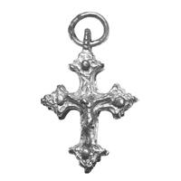
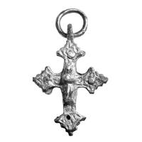

Catalog › CE-0593 · WEB2026-05
Encolpion de argint auriu de tip occidental, palatul de la Mangup
sec. XV (a treia pătrime, după legenda ilustrației) (1451–1475) · Mangup (Mangup-Kale), Crimeea, Ucraina
double-sided reliquary cross (enkolpion), argint; c. XV (a treia pătrime, după legenda ilustrației) (1451–1475); found at Mangup (Mangup-Kale), Crimeea, Ucraina.




Identificare
- Categorie
- Encolpion bivalv (relicvar)
- Material
- Argint
- Tehnică
- Turnare în relief; Gravare (incizie); Aurire
- Dimensiuni
- Î 42 × L 29 × Gr 11 mm
Iconografie
- Descriere avers
- Răstignire în tradiția creștină occidentală: trupul lui Hristos alunecă pe stâlpul crucii, rotit brusc spre stânga, capul sub nivelul brațelor, înclinat spre umărul stâng. Urmele de uzură fac aproape invizibile trăsăturile și detaliile veșmintelor.
- Revers
- Maica Domnului cu Pruncul
- Descriere revers
- Maica Domnului Odighitria cu Pruncul pe brațul stâng și capul plecat spre el („scena Umilirii”).
Datare și atribuire
- Datare
- sec. XV (a treia pătrime, după legenda ilustrației) (1451–1475)
- Tipologie
- Cruce latină turnată, cu capete triunghiulare în formă de boboc stilizat
Descoperire
- Localitate
- Mangup (Mangup-Kale)
- Regiune
- Crimeea
- Țară
- Ucraina
- Context
- Fortificație
- Coordonate
- 44.6099° N, 33.7870° E
- Precizia locului
- Doar localitatea
Păstrare și referințe
- Bibliografie
- Западнохристианский крест-энколпион из княжеского дворца Мангупа, portal „Открытая археология” (открытаяархеология.рф), fără dată de publicare. https://xn--80aajhqhktebqcvc2c9e6cj.xn--p1ai/finds/%D0%B7%D0%B0%D0%BF%D0%B0%D0%B4%D0%BD%D0%BE%D1%85%D1%80%D0%B8%D1%81%D1%82%D0%B8%D0%B0%D0%BD%D1%81%D0%BA%D0%B8%D0%B9-%D0%BA%D1%80%D0%B5%D1%81%D1%82-%D1%8D%D0%BD%D0%BA%D0%BE%D0%BB%D0%BF%D0%B8%D0%BE%D0%BD-%D0%B8%D0%B7-%D0%BA%D0%BD%D1%8F%D0%B6%D0%B5%D1%81%D0%BA%D0%BE%D0%B3%D0%BE-%D0%B4%D0%B2%D0%BE%D1%80%D1%86%D0%B0-%D0%BC%D0%B0%D0%BD%D0%B3%D1%83%D0%BF%D0%B0 [accesat 17.10.2026] Sursa citează: V. E. Naumenko, „Латиняне” на Мангупе. Уникальный западноевропейский крест-энколпион из раскопок княжеского дворца Мангупского городища: проблемы атрибуции и датировки, în „Вестник Волгоградского государственного университета”, seria 4.
- Figura
- Ris. 1 (patru vederi, cu scară)
- Analogii
- Cruci „latine” turnate din argint, sfârșitul sec. XIV–XV, din Țărmul de Sud al Crimeii: tezaurul Ai-Vasil (Ialta, a doua treime a sec. XV, descoperit 1901; două cruci), golful Panair de la Aiu-Dag (săpături 1995), turnul porții cetății Chembalo (sec. XV); cea mai apropiată, după sursă, este cea de la Aiu-Dag.
- Observații
- Descoperit în partea de vest a palatului princiar de la mijlocul sec. XV, în straturile superioare; săpături la palat din 2006. Cruce echilaterală turnată, cu placare de aur; cele două valve sunt turnate în aceeași matriță și prinse cu patru nituri cilindrice în centrul proeminențelor triunghiulare; după turnare imaginile au fost ușor gravate. Inel de argint turnat din același argint. Dimensiuni totale 4,2 × 2,9 cm, grosime 1,1 cm. Fond ornamental slab vizibil; spre deosebire de piesa de la Aiu-Dag, fără hașură în rețea. Sursa o leagă de un atelier din Caffa și de un preot catolic (ipoteze ale autorilor). Coordonate: ale localității (aproximative), nu date în sursă.
Citare: Corpus Encolpiorum, CE-0593, Encolpion de argint auriu de tip occidental, palatul de la Mangup, https://vitaliejosanu1979-ux.github.io/primul-meu-proiect/piese/WEB2026-05/ (accesat 2026-10-17).